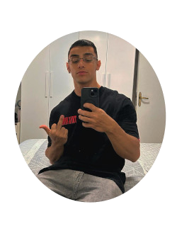
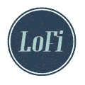

/norket25ian-tech-Meu Git hub
/norket25ian-tech-Meu Git hub @ian_goncalves_silva-Meu instagram
@ian_goncalves_silva-Meu instagram Ian Gonçalves Silva-Meu linkedin para contratações
Ian Gonçalves Silva-Meu linkedin para contrataçõesMeu nome é Ian Gonçalves tenho 20 anos sou desenvolvedor de sites e futuro programador eu estudo HTML atualmente e estou fazendo um site sobre mim também sou um estudante de inglês iniciante que quero ser no futuro fluente em inglês,eu gosto muito de beber café e também escutar lo fi durante meus estudos e por enquando que eu desenvolvo sites.

/norket25ian-tech-Meu Git hub@ian_goncalves_silva-Meu instagramIan Gonçalves Silva-Meu linkedin para contrataçõesQuando eu estudo eu gosto muito de me manter focado e para isso eu utilizo um tipo de musica que é o lo fi clique no icone abaixo para entender mais sobre esse tipo de música
